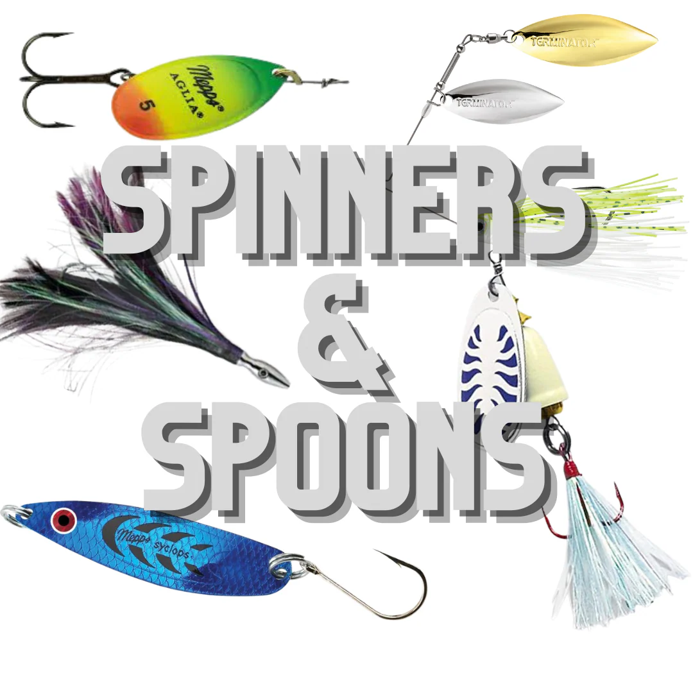

Of all the gear decisions an angler makes, line is the most overlooked and the most consequential. It's the only thing connecting you to the fish, and the wrong choice costs you fish in ways that are hard to trace. A bad reel is obvious. The wrong line is invisible until you lose something you should have landed.
Here's what each line type does well, where it falls short, and how to match it to what you're chasing in Quebec's freshwater systems.
Monofilament: The Forgiving Starting Point
Monofilament is extruded nylon, and it's been the default fishing line for over sixty years for good reason. It's cheap, widely available, easy to tie knots in, and stretchy enough to absorb the shock of a hard strike or a fish that surges at the net. That stretch is its defining characteristic — it's a feature in some situations and a liability in others.
Mono floats. This matters more than most people realize. On topwater lures, a floating line keeps your connection to the lure on the surface and doesn't pull the nose of a floating plug underwater on the retrieve. For surface presentations — poppers, walk-the-dog lures, wakebaits — mono is the technically correct choice.
Mono is also forgiving on treble-hook lures. The stretch cushions the hook set and keeps the lure from tearing free during the fight. On a crankbait or a rapala with two sets of trebles, the give in mono works in your favour.
The downsides are real. Mono absorbs water and weakens over time. UV breaks it down faster than most people change it. It has significant memory — leave it on the spool all winter and it comes off in coils that never fully straighten. In Quebec's cold springs and falls, monofilament stiffens noticeably, which affects casting distance and sensitivity. If you're fishing in 4°C water, mono is not performing at its rated strength.
Best uses: topwater presentations, trolling, trout on light gear, beginners learning to tie knots and handle line.
"Mono is not a beginner's compromise — it's the correct tool for specific applications. Use it where its properties serve the presentation."
Braided Line: Sensitivity and Strength Without Compromise
Braid is woven from synthetic fibres — usually Dyneema or Spectra — and it behaves almost nothing like monofilament. There is essentially no stretch. It doesn't absorb water. It doesn't degrade in UV the way mono does. And its diameter-to-strength ratio is dramatically better: 30 lb braid has roughly the diameter of 8 lb monofilament.
That thin diameter and zero stretch combination gives you something that mono can't match: you feel everything. A light tap on a jig in 30 feet of water. A walleye picking up a drop-shot bait and moving two inches sideways. The subtle pressure change when a bass inhales a soft plastic instead of striking hard. Braid transmits it all.
The thin diameter also means more line on the spool and better casting distance for light lures. A 3000-size spinning reel spooled with 20 lb braid carries twice as much line as the same reel with 20 lb mono, and you can cast farther because there's less resistance as it peels off the spool.

For pike and muskie, braid is increasingly the standard choice. The no-stretch hookset drives hooks through a hard, bony mouth cleanly, and the thin diameter lets you go heavier without losing castability. 30 to 50 lb braid on a medium-heavy rod with a 20 lb fluorocarbon leader handles nearly everything those species require.
Braid's weaknesses: it's visible in clear water. Fish in pressured, clear conditions will reject presentations on straight braid. It also cuts through things — if braid wraps around the motor prop or a dock cleat, it wins. Handle it carefully. And it doesn't knot the same way as mono — some knots that work fine on mono will slip on braid. The Palomar and the uni-to-uni for leaders are your go-to connections.
In cold Quebec springs, braid shines where mono struggles. It doesn't stiffen, it doesn't take on water weight, and it casts well even in near-freezing conditions. For early May pike fishing when ice just came off the shallows, braid with a fluorocarbon leader is hard to beat.
Best uses: jigging for walleye, pike and muskie, heavy cover bass fishing, drop-shot and finesse presentations in deep water, any situation requiring maximum sensitivity.
Fluorocarbon: The Invisible Leader
Fluorocarbon is polyvinylidene fluoride (PVDF), and its defining property is a refractive index nearly identical to water — approximately 1.42 versus water's 1.33. That's close enough that fluorocarbon essentially disappears underwater to a fish looking at it from any angle. Mono and braid are both clearly visible in clear water conditions. Fluorocarbon is not.
It sinks. This matters for presentations where you want the line to pull the lure down rather than float it: jigs, dropshots, Carolina rigs, and jigging spoons all benefit from fluoro's faster sink rate. When you're fishing a 1/8 oz jig in a current seam, a floating line creates belly and pull that fights the natural drift. Fluorocarbon sinks and gets you in contact with the bottom faster.
Fluorocarbon has less stretch than mono, more than braid. It's stiffer at the same diameter, which gives it better abrasion resistance than either of the other two — an important property when you're bouncing a jig off rocks or pulling a fish through submerged timber. That stiffness is also why fluorocarbon is the preferred leader material for braid: a 12-18 inch fluorocarbon leader tied to braid gives you invisibility at the business end without sacrificing the sensitivity of the braid mainline.
The limitation is cold water. Fluorocarbon becomes noticeably stiffer in cold temperatures — stiffer than mono, in fact. In spring fishing at 4-8°C, fluorocarbon on the main spool can come off in stiff coils and create casting issues. As a leader material, this is not a significant problem because the length is short. As a mainline through a cold Quebec May, it creates enough issues that most experienced anglers use braid main with a fluoro leader rather than straight fluorocarbon.
Fluorocarbon is also the most expensive of the three by a significant margin. A quality 200-metre spool of 12 lb fluorocarbon costs two to three times the equivalent in mono. Used as a leader material, this is a non-issue — a small spool lasts a full season. Used as a mainline on five rods, the cost adds up.
Best uses: leader for braid in clear water, finesse presentations in low-clarity conditions, jigging and bottom-contact presentations where sink rate matters, any situation where fish are line-shy.
The Braid + Fluorocarbon Leader Setup
The setup that most experienced Quebec freshwater anglers have converged on — regardless of species — is 15-30 lb braid as the main line with a 12-18 inch fluorocarbon leader connected via a double uni or FG knot. This combination gets you the sensitivity, strength, and cold-weather performance of braid with the invisibility and abrasion resistance of fluorocarbon at the lure end.
For walleye jigging on Lac Saint-Louis or the St. Lawrence: 10-15 lb braid, 8 lb fluoro leader. For pike on the Mille-Îles in spring: 30 lb braid, 20 lb fluoro leader. For smallmouth bass in rocky river sections: 15 lb braid, 12 lb fluoro leader. The formula adapts, but the logic stays the same.
The one situation where straight mono or straight fluoro makes sense is when the presentation specifically calls for it — topwater with mono, light finesse jigging in gin-clear water with straight fluorocarbon on a light spinning setup, or trolling cranks where mono's stretch absorbs the constant pressure of being dragged behind a boat.
Quick Reference: Line by Species
Walleye
10-15 lb braid mainline, 8-10 lb fluorocarbon leader. The braid sensitivity is essential for detecting soft bites; the fluoro leader keeps the terminal end invisible in the clear water walleye prefer.
Northern Pike
20-40 lb braid with a fluorocarbon or wire leader. Fluoro (30 lb) works for most pike situations; for fish over 90 cm in heavy weed cover, consider a short wire trace to prevent bite-offs.
Largemouth Bass
Heavy cover: 30-40 lb braid, no leader — the weight and no-stretch hookset are needed to horse fish out of vegetation. Finesse fishing: 8-10 lb fluorocarbon for drop-shots and light presentations in clear conditions.
Smallmouth Bass
10-15 lb braid with 8-10 lb fluoro leader covers most situations. In very clear rocky rivers, drop to straight 8 lb fluorocarbon for finesse presentations.
Brook Trout
4-8 lb mono or fluorocarbon. Trout in small clear streams are the most line-shy fish you'll encounter in Quebec. Keep it light, keep it invisible.
Yellow Perch
6-10 lb mono or braid. Perch aren't particularly line-shy. Keep it light enough for the presentation; sensitivity matters more than invisibility here.

20+ years fishing Quebec's freshwater systems. Kayak angler, catch-and-release advocate, and founder of Sub Urban Anglers.
Read More About Me